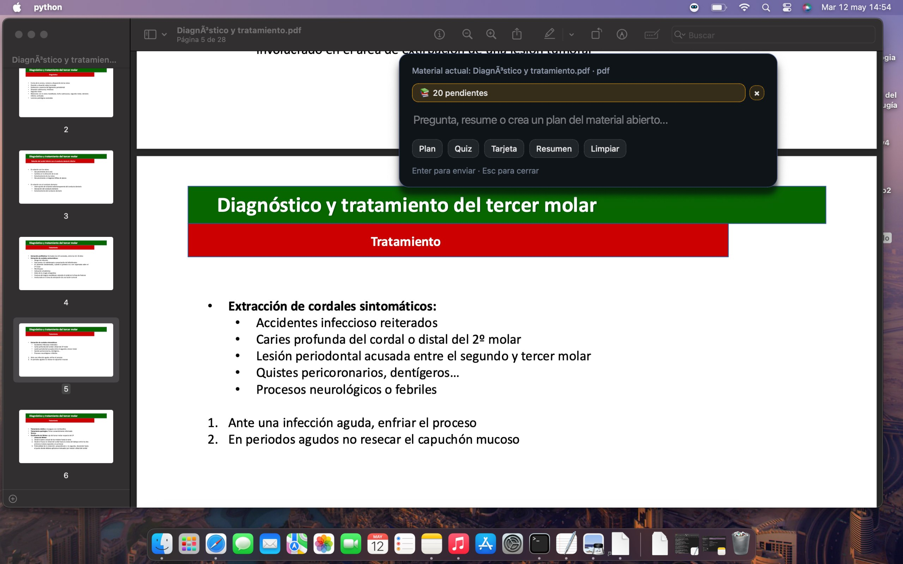
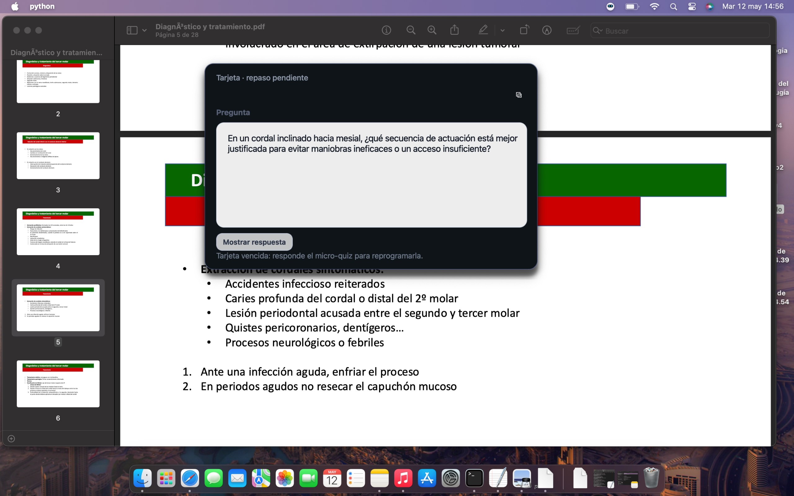
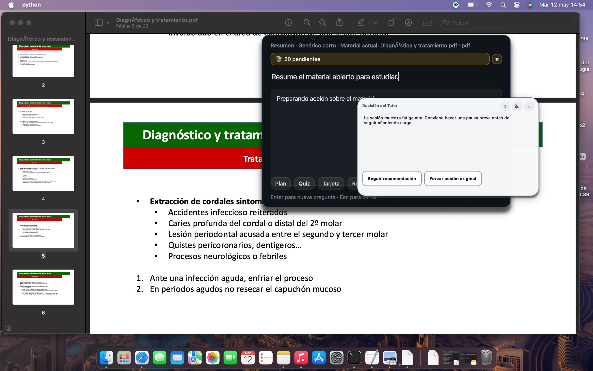

1
Detecta el material abierto
Trabaja sobre PDFs, apuntes o contenido académico visible para mantener el estudio centrado en la fuente.
Klaus convierte apuntes, PDFs y material de clase en explicaciones, resúmenes, tarjetas de repaso, planes de estudio y preguntas tipo test. No se limita a responder: ayuda a organizar el aprendizaje.
El sistema puede generar tarjetas y micro-preguntas para reforzar lo que queda pendiente.
Klaus está diseñado para acompañar el flujo real de estudio universitario: abrir material, entenderlo, practicarlo y detectar qué conviene repasar después.
Trabaja sobre PDFs, apuntes o contenido académico visible para mantener el estudio centrado en la fuente.
Permite pedir un resumen, un quiz, una tarjeta de repaso o un plan de estudio sin cambiar de contexto.
Transforma el material en explicaciones claras, preguntas tipo examen y estructuras de repaso.
Puede sugerir pausas, repaso pendiente o continuar con la acción original según la carga de la sesión.
La interfaz está pensada para mantenerse encima del material académico y actuar como una capa de ayuda rápida, sin obligar al estudiante a reconstruir el contexto desde cero.

El estudiante puede pedir un resumen, generar un quiz, crear tarjetas o planificar el estudio desde el material abierto.

Convierte conceptos del temario en preguntas para consolidar memoria y comprensión.

El sistema puede sugerir cuándo continuar, pausar o reforzar una parte del estudio.
Klaus se centra en tareas académicas concretas que un estudiante universitario repite a diario.
Genera explicaciones y síntesis enfocadas en entender el temario y preparar el examen.
Crea práctica activa a partir del contenido, útil para detectar lagunas antes del examen.
Convierte ideas clave en tarjetas para reforzar memoria, comprensión y recuperación activa.
Klaus se encuentra actualmente en fase piloto, siendo probado con un número reducido de estudiantes universitarios para validar su utilidad real en contextos de estudio y preparación de exámenes.